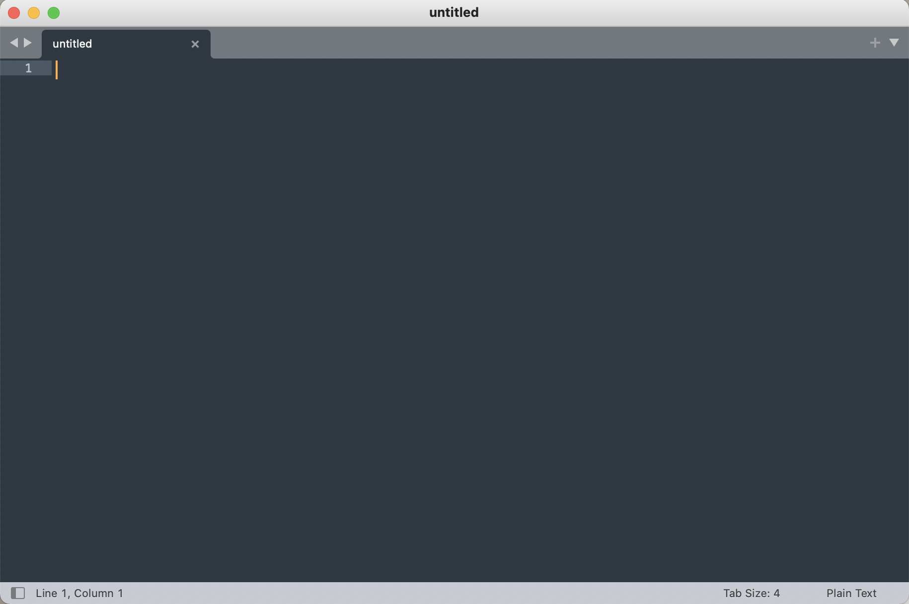
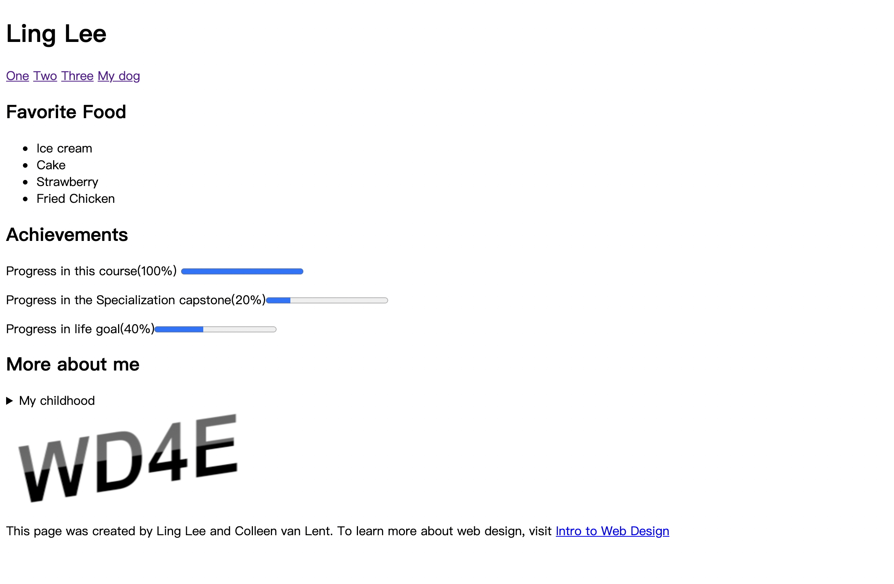
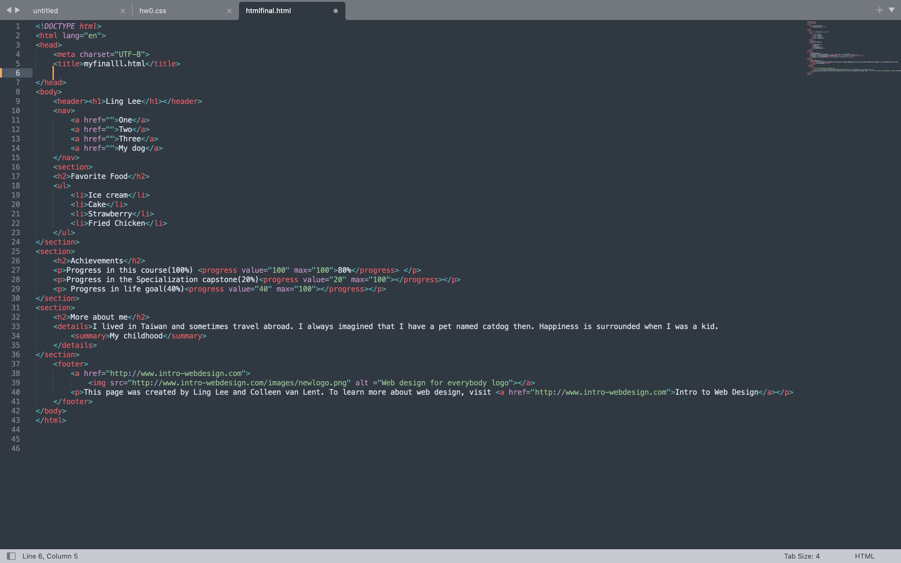

This is why
使用coursera網站上課的原因是因為上面有多所大學提供的課程，而且之前就在平台上上過一樣式Universiry of Michigan的教授的課，覺得上面的課程內容很符合我現在的程度，難度適中，教授也講得很詳細。
我上的課程為“Web design for everybody 系列中的 一、二、三組課程，分別介紹HTML, CSS, Javascript 的介紹，完全符合我需要學的而選這系列課。
我用的程式編輯軟體為Sublime Text，會用這個軟體的主要原因為上線上刻的老師建議的，下載之後也發現這個軟體好用之處：其中我覺得最好用的功能之一為這個軟體在選定程式語言後會自動幫不同性質的程式碼變色，可以讓我清楚分辨我有沒有少打end tag 或是link格式有沒有錯等，也讓整個程式版面變整齊，清楚表示我現在打的是tag還是一般文字。
課堂進行到最後的時候，老師以一個Final Project應用前面課程介紹過的幾個Tags，做一個簡單的網站，初步測試自己寫出的HTML Code有沒有問題。
我做出來的Final project
我寫網站的程式碼
learned alot